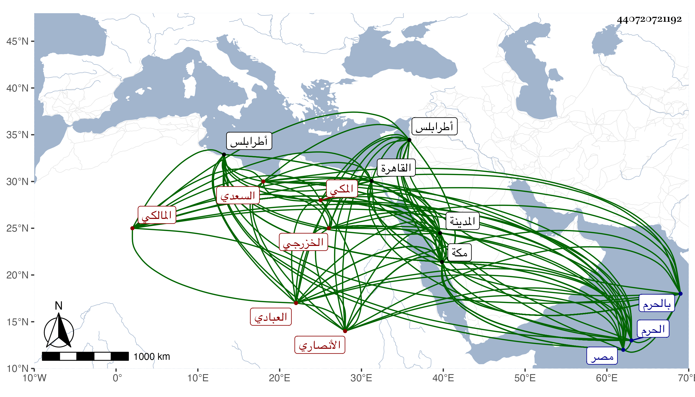

0902Sakhawi.DawLamic.ITO20230111-ara1.EIS1600.440720721192
Biography ID: 440720721192
752
عبد القادر بن أبي القسم بن أبي العباس أحمد بن محمد بن عبد المعطي بن أحمد بن عبد المعطي بن مكي بن طراد المحيوي بن الشرف بن الشهاب الأنصاري الخزرجي السعدي العبادي المكي المالكي والد أحمد الماضي ويعرف باسمه . ولد في ثاني ربيع الآخر سنة أربع عشرة وثمانمائة بمكة ونشأ بها فقرأ القرآن عند الفقيه على الخياط وأربعي النووي وابن الحاجب الفرعي وألفية ابن مالك والتلخيص ، وعرض على جماعة وتلا القرآن لأبي عمرو ونصفه لابن كثير على محمد بن أبي يزيد الكيلاني تلميذ ابن الجزري وأخذ الفقه عن محمد بن موسى بن عائد الوانوعي نزيل مكة وشيخ رباط الموفق بها وأبي العباس أحمد اللجائي الفاسي وإبراهيم التركي التونسي والشهاب أحمد المغربي قاضي طرابلس وجماعة منهم البساطي وانتفع به وبالأولين وأذنوا له في التدريس في الفقه ، زاد البساطي والافتاء وحضر دروس التقي الفاسي الفقهية وغيرها وكان يطالع له كثيرا وينتخب له وانتفع بمجالسته وتهذب بعبارته وأخذ العربية عن اللجائي والذين بعده وأذنوا له فيها وعن أبي البقا وأبي حامد ابني الضياء والبساطي وعنه وعن التريكي أخذ أصول الفقه وأذنا له وكذا أخذه عن الأمين الاقصرائي وغيره وأخذ قطعة من التلخيص عن البساطي ومن تلخيص ابن البناء في الحساب عن اللجائي ومن القصيد المسمى بذخيرة الرائض في العلم والعمل بالفرائض عن ناظمها عبد الله بن عبد الرحمن بن مسعود المصري مع قطعة من ألفية النحو والمنطق عن السيد العلاء شيخ الباسطية المدنية وغيره وعلم الحديث عن أبي شعر الحنبلي حين جاور بمكة بحث عليه ألفية العراقي وشرحها وعادت بركته عليه وانتفع بخصائله وشمائله وأفرد بارشاده زوائد تهذيب التهذيب عن أصله لشيخنا وحضه على التوجه إليه والأخذ عنه والاقبال على فن الحديث الذي قل أهله فارتحل قصدا لذلك لمصر في سنة اثنتين وأربعين فاجتمع به وأخذ عنه المسلسل وغيره ولم يفهم شيخنا مقصده فما ظفر منه بمراده فأقام بالقاهرة بعض سنة ورجع إلى بلده وزار المدينة غير مرة جاور في بعضها وكان قد سمع على ابن الجزري وابن سلامة والفاسي ومحمد بن علي النويري والد أبي اليمن وقرأ على التقي المقريزي بمكة الأول من الامتاع له وعلى أبي الفتح المراغي الكتب الستة والموطأ والشفا وألفية الحديث والسيرة كلاهما للعراقي وجملة وأجاز له خلق منهم عائشة ابنة ابن عبد الهادي وعبد الرحمن بن طولوبغا وعبد القادر الأرموي والشهاب بن حجي والحسباني والولي العراقي والشرف ابن الكويك وأبو هريرة بن النقاش والكمال بن خير والبدر بن الدماميني والتاج بن التنسي ورقية ابنة ابن مزروع ، خرج له صاحبنا النجم بن فهد مشيخة وكتب الخط المنسوب وعانى الوثائق في أول أمره ووقع قليلا على قضاة مكة ثم أعرض عن ذلك ، ودرس بالبنجالية نيابة عن أبيه في حياة شيخه الفاسي وكذا درس بدرس ابن سلام وولي قضاء المالكية بمكة عقب موت أبي عبد الله النويري بعناية سودون المحمدي ناظر الحرم لاختصاصه به في ربيع الأول سنة ثلاث وأربعين فباشره بعفة ونزاهة وصرف عنه غير مرة بغير واحد ولشدة اختصاصه بناظر الحرم المشار إليه ابتنى دارا عظيمة بمكة فكان بعضهم يقول أنه يصح الاعتكاف فيها لكونها فيما زعم بآلات المسجد وهو كلام ساقط وأصيب في عينيه ثم قدح له فأبصر وكذا أثكل ولده الماضي فصبر ، كل ذلك وهو منتصب للافادة والتدريس حتى انتفع به الفضلاء من أهل بلده والقادمين إليها لحسن إرشاده وتعليمه وتقريره وتفهيمه وصار شيخ بلده في مذهبه والعربية غير مدفوع فيهما وكتب حاشية على كل من التوضيح وابن المصنف وشرحا على التسهيل لم يكمل واشتهر بهذا الفن اشتهارا كليا وكذا كان جده أبو العباس أستاذ أهل بلده فيه ، إلى غير ذلك من نظم ونثر أوردت شيئا منه في معجمي وقد لقيته بمكة في المجاورة الأولى ثم الثانية وأخذت عنه وأكثرت من الاجتماع به في الثانية وبالغ في تعظيمي بما أثبته في محل آخر وهو من نوادر الوقت علما وفصاحة ووقارا وبهاء وتواضعا وحشمة وأدبا وديانة وتعبدا وصياما وقياما وتلاوة ممتع المجالسة متين الفوائد حافظ لجملة من المتون والتاريخ والفضائل ضابط لكثير من النوادر والوقائع مع المحبة في الفضلاء وأهل العلم والرغبة في مجالستهم والانجماع عن بني الدنيا والمروءة الغزيرة والافضال لأصحابه والدربة بأحوال القضاء وتمام الخبرة بالأحكام ، قال البقاعي ولم يزل يركض خيل الشباب ويفتح إلى طريق كل فن بحسب الطاقة أجل باب إلى أن ظفر باللباب وأتى من القول الصواب بالعجب العجاب وكتب الخط الجيد الفائق في الرشاقة الباهر في ملاحة الوصف والرياقة وله ذهن رائق وتصور بديع مع السمت الحسن والعقل الوافر وحسن المجالسة وكريم المحاضرة ، ولي القضاء ودرس بالحرم وأفتى وانتفع به الناس وأهل بلده يثنون عليه خيرا ، وقد سمعت دروسه وبحث معي في بعض المسائل وذهنه جيد وقريحته وقادة وكلامه متين إلا أنه يحتاج إلى زيادة التحنيك بمجالسة العلماء وشدة المزاحمة للطلبة في الدروس وقد أجاب عن أسئلتي الجهادية بأجوبة غالبها متوسط الحال كذا قال لكونه لم يسلم له مقاله ولا تكلم معه بما استدل به على أنه عنده من أهل الأمانة والأصالة والأعمال بالنيات . مات وهو على القضاء في ظهر يوم الخميس مستهل شعبان سنة ثمانين بعد تعلله نحو عشرين يوما ويقال أنه طلع له طلوع بالقرب من الدير وأنه انفجر قبل موته بيومين أو ثلاثة واعتراه العصير حتى مات وصلى عليه بعد صلاة العصر عند باب الكعبة ودفن بقبر والدته بالقرب من قبر الفضيل بن عياض من المعلاة رحمه الله وإيانا .
